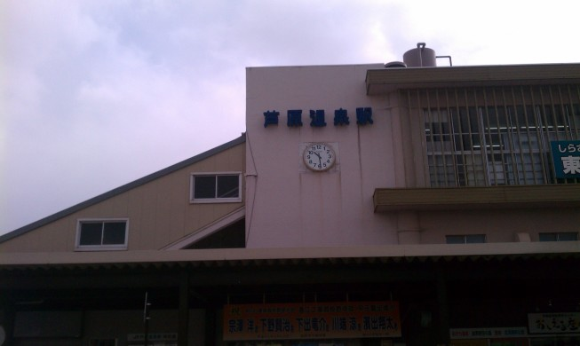

滋賀・福井旅行記(2013/03/12-2013/03/16)
その2 の続き．
03/14
また8時半に目覚め，9時に出発． やけに寒いと思ったら雪が舞っている……． 目標は東尋坊に行くことと，温泉に入ること．
福井駅前のなか卯で朝食を取り，芦原温泉駅へ．

ここで2日フリーパスチケットを買う．
通常運賃では東尋坊まで行くと片道750円だが，このフリーパスチケットを買うと1000円で2日間，乗降し放題となる． バスは上り，下りともに1時間1本しかないものの，かなり安くなるので買わない理由がない． また，施設によってはこのフリーパスチケットで割引がきく．
バスに乗って東尋坊へ．
ボコボコした岩場で波が崩れ，真っ白になっている． 岩の形と相まって異様な雰囲気で，まさに奇景という言葉がぴったりだった． あと，気温のせいか潮風が強くて寒かった……．
東尋坊タワーという展望台もあったが，展望するよりは近くで見てたほうが面白そうなので散策することにした． とりあえず目標は，遠くに見える雄島． 朱色の橋が異彩を放っている．
散策用に崖沿いの遊歩道が整備されていた． 崖の形は次第に普通になっていき，改めて東尋坊を眺めるとやはり異様なものを感じる．
そんな感じで1時間ほど歩いて雄島に到着． 潮風がかなり強くて，軽いものなら手に持ってても飛ばされそうな勢い．しかも冷たい．
雄島を散策． 基本的には森の中か崖のどちらかなので，あまり写真撮ってない．
雄島の中にある大湊神社．
これも1時間ほどで一周して，時刻はちょうど13時くらい． とりあえず昼食を取るため，バスに乗って東尋坊へ戻って散策し，適当な店に入る．
いろいろなものを少しずつ食べられる学生定食．1050円． こういうところの常として，値段の割にはちょっと少ない．
食事の後も帰りのバスまで時間が余ったので，お土産選びがてら散策した． すると，たけだ亭という店で，タンクで置いてある日本酒の生原酒をその場で汲んで売るという面白いものがあった． 試飲させてもらったところ結構おいしかったので，4合瓶で購入． 他には羽二重餅をいくつか買い，日本酒と合わせてその場で家まで発送した．
その後はバスに乗って温泉へ． セントピアあわらという公衆浴場に行ったら，その場で生卵を買って温泉につけておき，自分で温泉卵を作るというサービスがあった． さっそく買って温泉に投入し，自分も入浴しに行く．
入浴後，温泉卵を食べてみる．
見事に温泉卵っぽくなってた（写真はなぜか緑がかってしまったけど，目で見ると普通に白い）． 味も普通のゆで卵に加えて牛乳のような濃厚な風味が加わっていて，いかにも温泉卵という感じ．
ちゃんとビジネスホテルで寝ていたし，それまではあまり疲れを感じていなかったが， 温泉に入ったら一気に疲れが出てきて移動する気力が失せてしまった． この後はノープランだったので，とりあえずバスに乗って駅に行き，福井まで戻ることにした．
福井についてもまだ17時． どうしようかなーと悩んで，とりあえず武生にもう一度行き，ボルガライスに再チャレンジしてみることにした． 電車に乗ってれば眠れるし．
ということで武生． 今回はまだ明るいし雨も降っていないのでちゃんと写真が撮れた．
そしてデイリーポータルでも紹介されていた「洋食屋 いし川」へ． カウンター席が10席あってその奥がすぐキッチン，あと座敷が1つの狭い店内で， 入った時には客はおらず息子さんがカウンターで宿題をしていた．
ボルガライスを注文して待つ． 店主のおっちゃんが目の前で調理してくれる．
写真はボルガライスしか撮ってないけど，実際には加えてポタージュとサラダ，お新香がついてきた．
カツは揚げたてでサクサクしていて，しかも普通のトンカツ定食くらいの大きさがあって満足度が高い． それに加えてグリーンピース入りチキンライスのオムライスが食べられる． 味はチキンライス，デミグラスソースともに控えめで，カツを中心によく合うようにできていて， これで900円なら納得といった味とボリュームだった．
ボルガライスを食べてまた福井へ行き，前日と同じホテルに泊まる． 18きっぷなのをいい事に適当に動き回っている．
結構出費があったのと疲れてたので，この日は外には飲みに行かず，近くのセブンイレブンで一本義のカップ酒を買ってきた．
その4へ続く ．